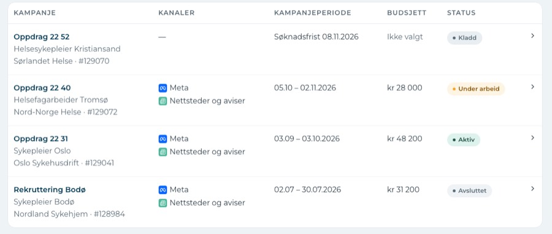
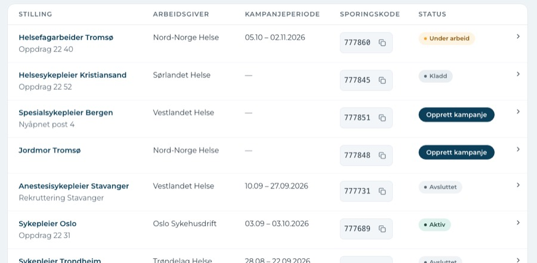
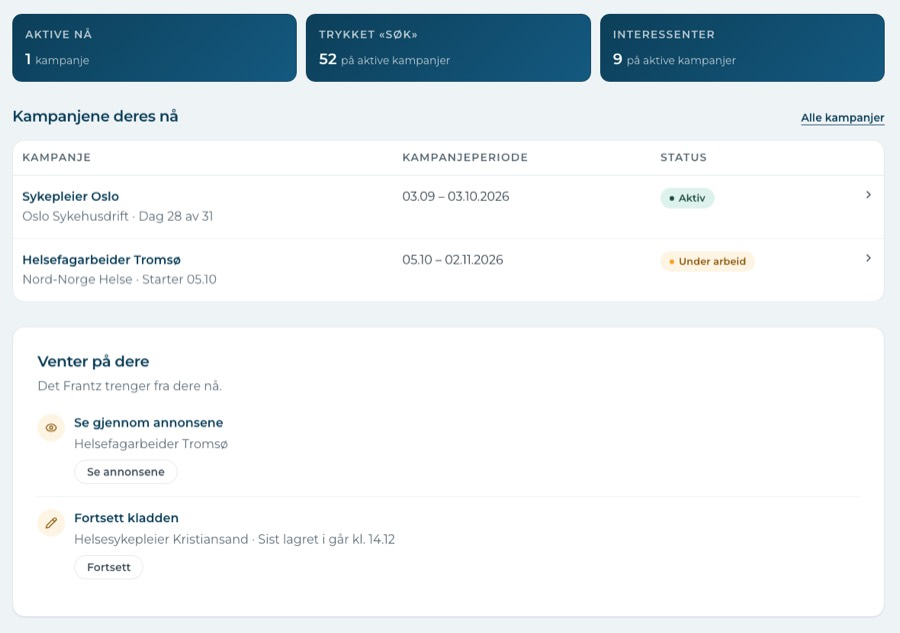
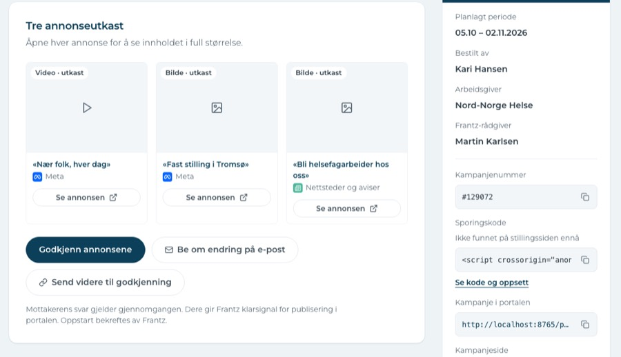
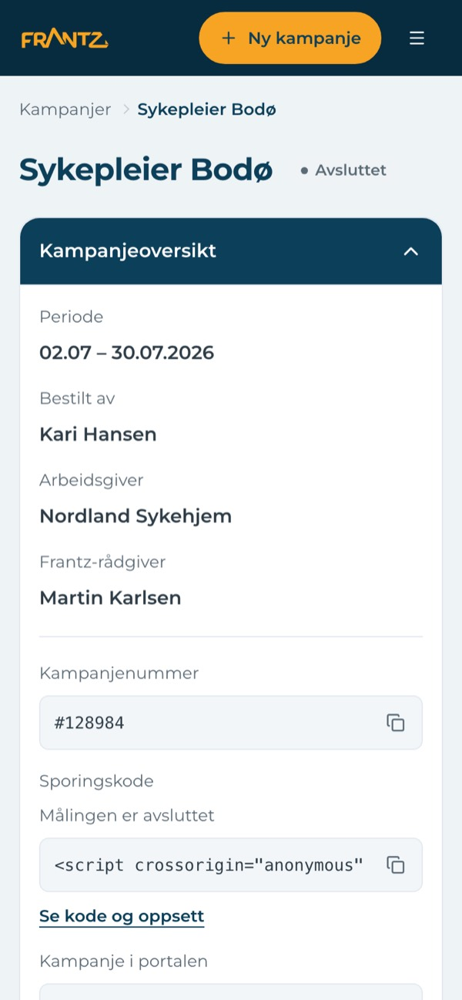
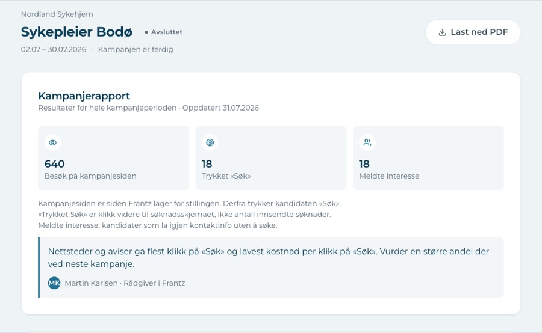
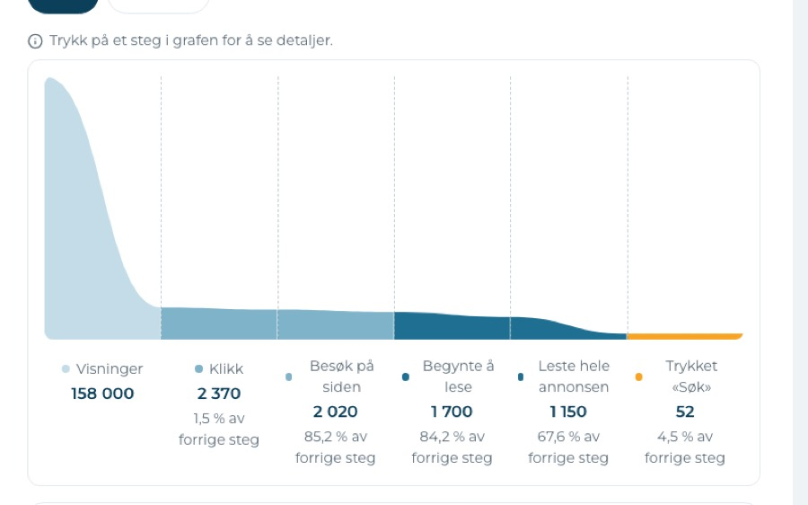
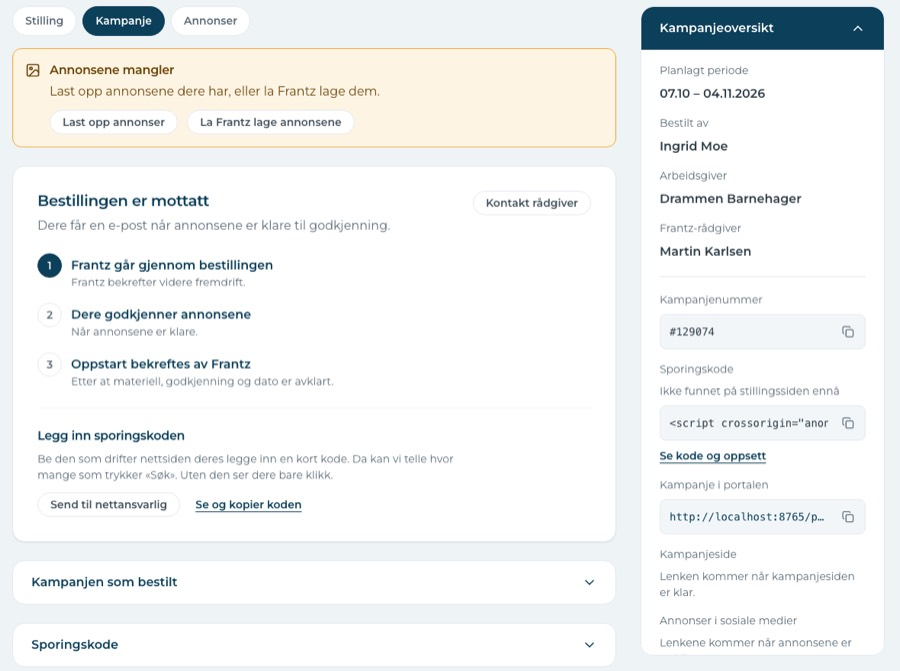

Frantz portal: a calm, honest tool that still makes people hunt
The craft is good and the tone is right. What holds it back: the same campaign has different names, two lists show the same things, and the most useful moments (approve, share) are not where people look first.
0P0 · blocks a task
8P1 · real friction
7P2 · polish
Keep these
They work. Protect them when you change other things.
Status-specific campaign pagesBestilt tells you the next three steps. That answers «what happens now?» from the research.
Advisor note in the reportMartin's one-line comment gives the numbers meaning. Very few tools do this.
Compare with your own last campaign«34 flere enn sist» is the right kind of context.
Delt rapportClean, no login, PDF button at the top. This is the best page in the portal.
New-customer homeOne clear first step, and a plain answer to «Hva er en kampanje?».
Visual restraintNavy, one amber action, real Norwegian copy. It feels like one product.
Fix before Tuesday
Small changes, big effect in a demo. All four are an hour or less each.
One name per campaign, everywhere
Finding 1. The client will notice «Oppdrag 22 31» vs «Sykepleier Oslo» in the first minute.
Put «Venter på dere» first on Hjem
Finding 3. The thing that needs the user is now third on the page.
«Del rapport» and «Last ned PDF» at the top of the report
Finding 6. Task 5 in the brief has no visible button today.
Make the demo data agree
Finding 8. Drammen is missing from every list.
Findings
Ranked by how much they slow a real user down. Each one has a fix that keeps the current design language.
P1Hjem · Kampanjer · Stillinger · campaign pages
1. The same campaign has two or three names

Kampanjer leads with «Oppdrag 22 31». Hjem, Stillinger and the campaign page lead with «Sykepleier Oslo». Bodø is «Rekruttering Bodø» in the list and «Sykepleier Bodø» on its own page.
Why it matters
Task 2 in the brief is «find a campaign by their own name or number». If the bold name changes between pages, people stop trusting what they see and start reading every row.
Fix
One rule for every list, title and breadcrumb: the customer's own name first (if they gave one), job title and place second, number third. Same order on Hjem, Kampanjer, Stillinger and the page header.
P1Stillinger · Kampanjer
2. Stillinger and Kampanjer are two lists of the same things

Same rows, same period column, same status pills. «Opprett kampanje» also sits in the Status column, so one column holds both a state and an action.
Why it matters
Users will ask «where do I look for my campaign?». Two answers to one question is a classic cause of support calls.
Fix
Give each list one job. Stillinger shows only jobs that do not have a campaign yet, with «Opprett kampanje» as its own column. Everything with a campaign lives in Kampanjer. (See decision 2.)
P1Hjem
3. Hjem puts the status table above what needs the user

«Venter på dere» (approve ads, finish a draft) is the third block. The three dark tiles above have small numbers, and «Aktive nå: 1» repeats the table.
Why it matters
Returning users open Hjem to answer one question: «do I need to do something?». Today they scroll past status to find it. The dark tiles also use the bold colour block three times, so nothing stands out.
Fix
Order: greeting → «Venter på dere» (hidden when empty) → campaigns now → results. Turn the tiles light, make the numbers big, and drop «Aktive nå» since the table already shows it.
P1Under arbeid · approval
4. People approve ads they can only see as grey boxes

The approval decision sits under three empty placeholders. To see an ad you open a new tab, three times. The three buttons wrap onto two rows with equal weight.
Why it matters
This is the moment Frantz most needs a fast «yes». Showing the real ad is the whole point of the step (principle 3: one place per campaign).
Fix
Show the real image or video frame and the headline in each card. «Se annonsen» opens a large view on the same page. Keep «Godkjenn annonsene» as the only filled button. Put the other two side by side as secondary.
P1All campaign pages · phone
5. «Kampanjeoversikt» is heavy and hides things

On a phone, the finished campaign opens with the panel expanded: the first screen is IDs and script code, not results. On Under arbeid the same panel starts closed.
Why it matters
On desktop the panel scrolls inside itself, so the bottom links (like the shareable report) are out of sight. It mixes facts people read (period, advisor) with tools few people need (script code, URLs).
Fix
Split it: «Om kampanjen» (period, ordered by, advisor) always visible; «Lenker og kode» folded. On phone, always start closed. Lighten the navy header so it does not compete with the page title.
P1Avsluttet · Aktiv
6. The report has no share or download button

The shared report gets it right: «Last ned PDF» next to the title. Inside the portal the same report has no such button. The share link is at the bottom of the side panel.
Why it matters
Task 5: «show the result to their own client». Agencies do this after every campaign. It should be the most obvious action on a finished campaign.
Fix
Add «Del rapport» (copies the no-login link) and «Last ned PDF» next to the title on Avsluttet. On Aktiv, «Del rapport» only.
P1Insikt · Rapport
7. The funnel is not to scale, so it hides where people drop off

Klikk is 1.5 % of Visninger but is drawn at about a quarter of the height. From Leste hele annonsen (1 150) to «Søk» (52) is the second-biggest drop, but it looks small. «Søk», the result that matters, is a thin orange line.
Why it matters
Principle 4: numbers with meaning. A chart that changes the story is worse than no chart.
Fix
Show Visninger as a number above, then true-scale bars from Klikk to «Søk». Mark the step with the biggest drop in words («Flest falt fra her»). Make «Søk» the strongest bar.
P1Demo data
8. Campaigns are missing from the lists

Barnehagelærer Drammen (#129074) has its own page but is not in Kampanjer or on Hjem. Anestesisykepleier Stavanger is in Stillinger but not in Kampanjer.
Why it matters
In the demo on 3.11, someone will click «Kampanjer» after seeing Drammen and not find it. It makes the prototype look broken, not the design.
Fix
Add the missing rows to the shared demo data, so every campaign appears in every list it belongs to.
Polish (P2)
Worth doing, but none of these stops a task.
Sporingskode shows up three times on BestiltA task block, a folded section and the side panel. Keep the task block only.
The amber «Ny kampanje» stays visible while you make a new campaignOn Ny kampanje it competes with «Fyll ut skjemaet». Hide it on that page. The page title also says «Opprett kampanje» for the same thing.
Four «Hva betyr dette?» boxes on one reportThey look the same and say similar things. Use a one-line caption per chart, and keep one glossary at the bottom.
Page tabs look like filter buttonsStilling / Kampanje / Annonser / Insikt use the same pill style as «Trakt / Per kanal». Underline tabs would show «this is a page section».
«Følg opp de som har meldt interesse» floats between cardsMove it into the «Meldte interesse» number tile as a link.
Kampanjer: the draft row shows «Søknadsfrist» in the period columnAnd the intro promises results and reports, which drafts don't have. Show «—» and say «Alle kampanjene deres, også kladder».
Phone Hjem: one campaign fills the whole screenLabel/value rows make each card very tall. Use a compact row: name, status, period on two lines.
Bigger ideas for after 3.11
Not fixes. Directions to discuss with Frantz.
One progress line on every campaign
Bestilt's three steps work well. Show the same slim line on all states: Bestilt → Under arbeid → Aktiv → Avsluttet. People always know where they are.
Agencies think in end clients
Nordlys Rekruttering runs campaigns for many employers. A filter or grouping by «Arbeidsgiver» on Kampanjer would match how they work and report.
A report that leads with the answer
Start the report with one sentence: «18 trykket «Søk». Nettsteder og aviser ga mest, og billigst.» Then the charts as proof.
Checked on 390 px and 1440 px: Hjem (new and existing), Kampanjer, Stillinger, Ny kampanje step 1, Bestilt, Under arbeid, Aktiv, Avsluttet, Delt rapport. Not checked in this pass: the approval page itself (needs the full flow), later steps of Ny kampanje, settings, keyboard and screen-reader use. Earlier review (28.10) fixes are already in.